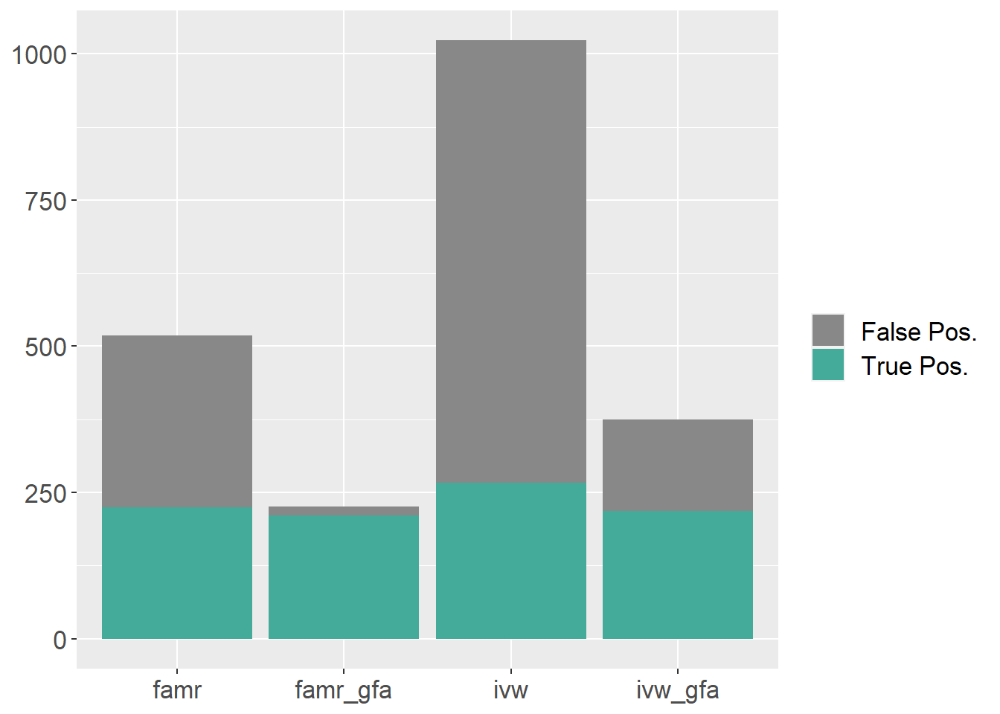
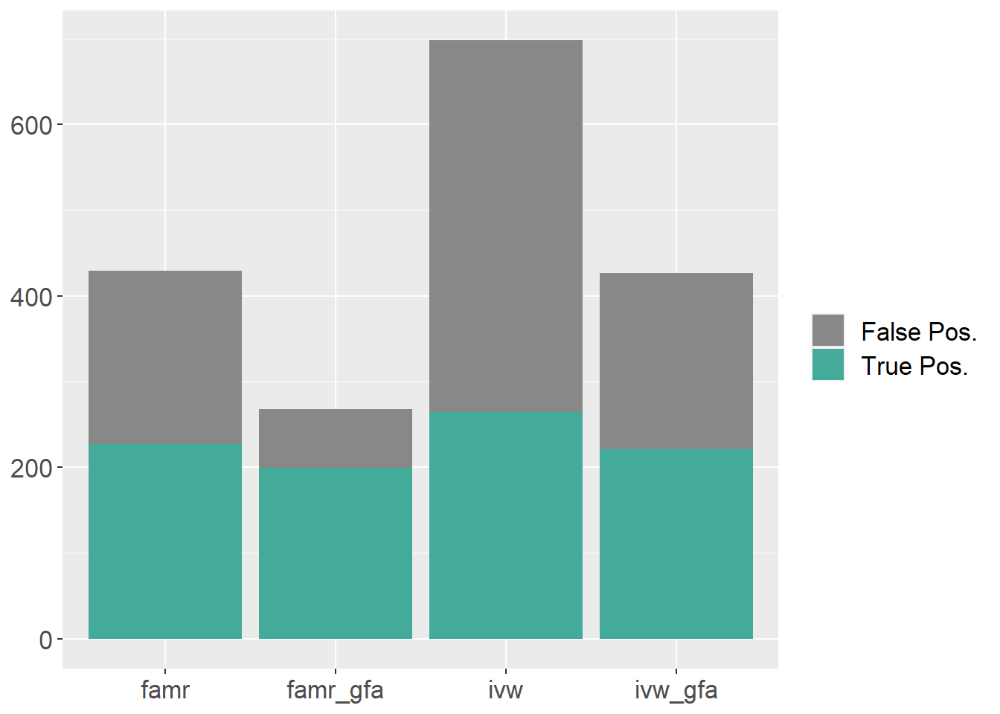
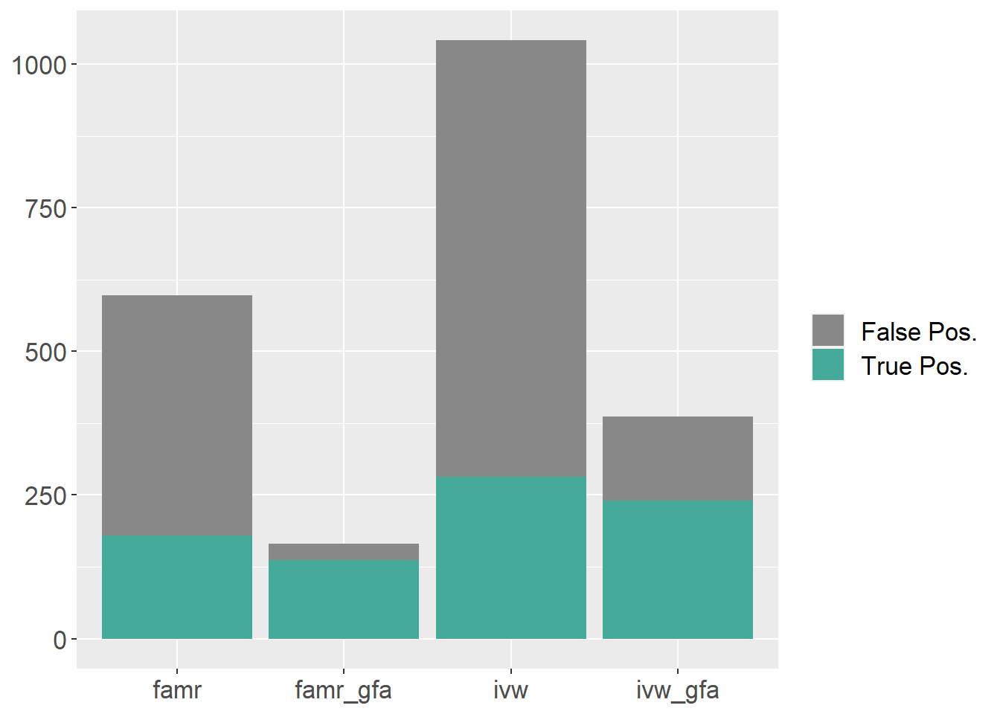
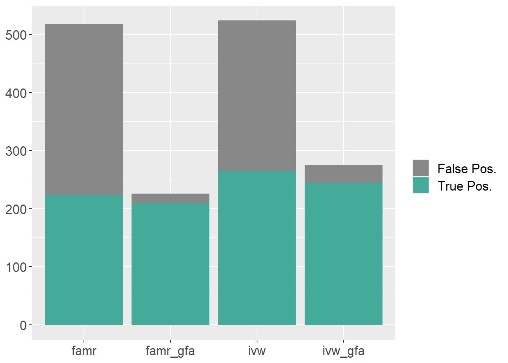
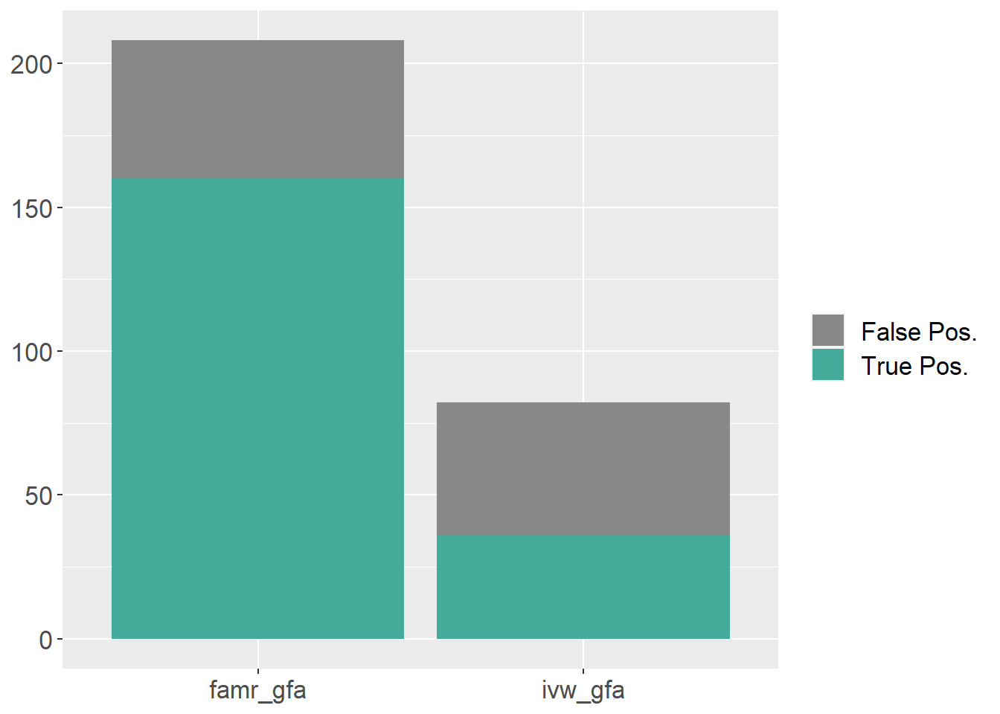
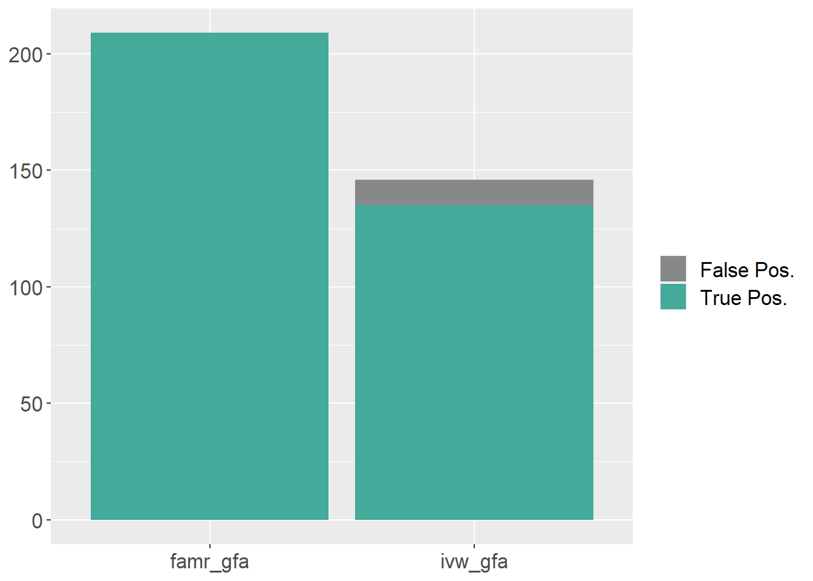
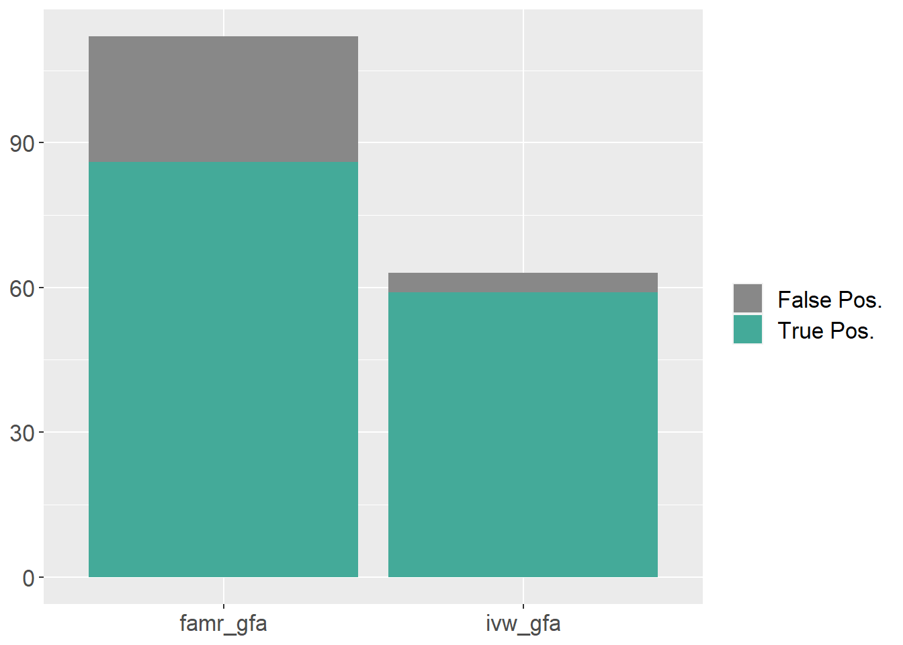
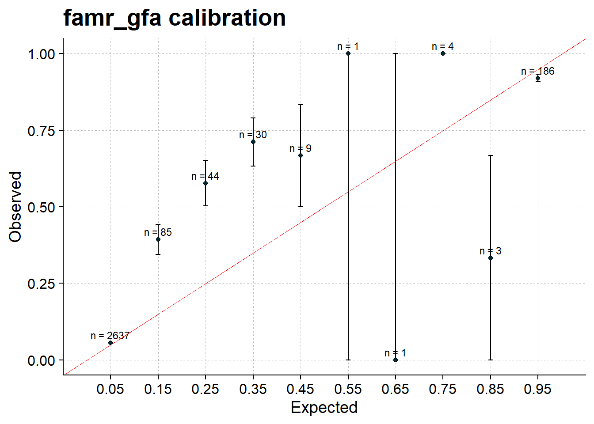
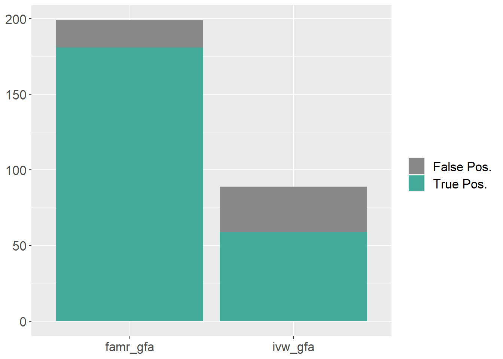

FAMR Simulations
Last updated: 2024-11-19
Checks: 6 1
Knit directory: mvmr_website/
This reproducible R Markdown analysis was created with workflowr (version 1.7.1). The Checks tab describes the reproducibility checks that were applied when the results were created. The Past versions tab lists the development history.
The R Markdown file has unstaged changes. To know which version of
the R Markdown file created these results, you’ll want to first commit
it to the Git repo. If you’re still working on the analysis, you can
ignore this warning. When you’re finished, you can run
wflow_publish to commit the R Markdown file and build the
HTML.
Great job! The global environment was empty. Objects defined in the global environment can affect the analysis in your R Markdown file in unknown ways. For reproduciblity it’s best to always run the code in an empty environment.
The command set.seed(20221205) was run prior to running
the code in the R Markdown file. Setting a seed ensures that any results
that rely on randomness, e.g. subsampling or permutations, are
reproducible.
Great job! Recording the operating system, R version, and package versions is critical for reproducibility.
Nice! There were no cached chunks for this analysis, so you can be confident that you successfully produced the results during this run.
Great job! Using relative paths to the files within your workflowr project makes it easier to run your code on other machines.
Great! You are using Git for version control. Tracking code development and connecting the code version to the results is critical for reproducibility.
The results in this page were generated with repository version 7800bcd. See the Past versions tab to see a history of the changes made to the R Markdown and HTML files.
Note that you need to be careful to ensure that all relevant files for
the analysis have been committed to Git prior to generating the results
(you can use wflow_publish or
wflow_git_commit). workflowr only checks the R Markdown
file, but you know if there are other scripts or data files that it
depends on. Below is the status of the Git repository when the results
were generated:
Unstaged changes:
Modified: analysis/famrsims.Rmd
Modified: data/results_test_rsparsepro_final_reg_norescale_prune0pt5/cor_plei_gx_0.2_gy_0.2_gz_0.2_psix_0.1_psiy_0.05_mu_0.0/all_res_famr_gfa.txt
Modified: data/results_test_rsparsepro_final_reg_norescale_prune0pt5/cor_plei_gx_0.2_gy_0.2_gz_0.2_psix_0.1_psiy_0.05_mu_0.0/all_res_ivw_gfa.txt
Modified: data/results_test_rsparsepro_final_reg_norescale_prune0pt5/cor_plei_gx_0.2_gy_0.2_gz_0.2_psix_0.1_psiy_0.05_mu_0.0/performance_famr_gfa.txt
Modified: data/results_test_rsparsepro_final_reg_norescale_prune0pt5/cor_plei_gx_0.2_gy_0.2_gz_0.2_psix_0.1_psiy_0.05_mu_0.0/performance_ivw_gfa.txt
Note that any generated files, e.g. HTML, png, CSS, etc., are not included in this status report because it is ok for generated content to have uncommitted changes.
These are the previous versions of the repository in which changes were
made to the R Markdown (analysis/famrsims.Rmd) and HTML
(docs/famrsims.html) files. If you’ve configured a remote
Git repository (see ?wflow_git_remote), click on the
hyperlinks in the table below to view the files as they were in that
past version.
| File | Version | Author | Date | Message |
|---|---|---|---|---|
| Rmd | 6e79545 | Nathan LaPierre | 2024-11-19 | added rsparsepro and rescale_z sim results |
| html | 6e79545 | Nathan LaPierre | 2024-11-19 | added rsparsepro and rescale_z sim results |
| Rmd | bfabf52 | Nathan LaPierre | 2024-10-22 | added results with new factor impute + high prior pi approach |
| html | bfabf52 | Nathan LaPierre | 2024-10-22 | added results with new factor impute + high prior pi approach |
| Rmd | 373c87c | Nathan LaPierre | 2024-08-09 | added state of the project, as well as details on real data |
| html | 373c87c | Nathan LaPierre | 2024-08-09 | added state of the project, as well as details on real data |
| Rmd | df92d98 | Nathan LaPierre | 2024-07-05 | added new FAMR simulations, and updated real data results with annihilator mode |
| html | df92d98 | Nathan LaPierre | 2024-07-05 | added new FAMR simulations, and updated real data results with annihilator mode |
| Rmd | 32197ca | Nathan LaPierre | 2024-07-01 | started working on adding new FAMR sims with annihilated factors |
Attaching package: 'cowplot'The following object is masked from 'package:ggpubr':
get_legendSimulation description
We simulate according to the following DAG:
Here, G are the Genotypes, X are the exposure phenotypes, Y is the outcome phenotype, and Z are confounders. All except Y are expected to be multivariate. The edge variables signify effects between these variables. Let \(M\) be the number of SNPs, \(K\) be the number of exposures, and \(J\) be the number of confounders.
The structural equation model for this DAG is:
\[Z = G\theta_{GZ} + \epsilon_Z\] \[X = G\theta_{GX} + Z\theta_{ZX} + \epsilon_X\] \[Y = X\theta_{XY} + G\theta_{GY} + Z\theta_{ZY} + \epsilon_Y\]
G is assumed fixed or is drawn from standard normal distributions. Define
\[\psi_X = \theta_{GZ} * \theta_{ZX}\] \[\psi_Y = \theta_{GZ} * \theta_{ZY}\] Then \(\psi_X\) defines the heritability of X mediated through Z, \(\psi_Y\) defines the confounding effect from G to Y that is correlated with X, and \(\theta_{GY}\) defines the confounding effect from G to Y that is not correlated with X.
By default, \(\theta_{XY}\) are fixed effects specified by the user, which allows control over the strength of effects in the simulation. All other effects \(theta_i\) (where \(i\) is a stand-in for \(GX\), \(GY\), and so on) are drawn according to point-(multivarite-)normal distributions,
\[\theta_i = f_i * \gamma^*_{i},\]
where f is the point-(multivariate-)normal,
\[f_i \sim \pi_{0,i}\delta + \pi_{1,i}\mathcal{N}_d(\mu, \Sigma_{i}),\]
where \(\delta\) is the Dirac delta function and \(d\) is the dimensionality of the effected variable, i.e. \(J\) if the effect is on \(Z\), \(K\) for \(X\), or \(1\) for \(Y\). \(\mu\), the mean parameter, is set to 0 by default, but can be set to non-zero values to allow “directional pleiotropy”. \(\Sigma_i\) is currently taken to be a diagonal matrix, but could be generalized to allow correlated effects.
\(\pi_{0,i}\) represents the amount of sparsity while \(\pi_{1,i}\) represents the density, and \(\pi_{0,i} + \pi_{1,i} = 1\). In practice this is achieved by first simulating the multivariate normal, then multiplying each entry by \(\pi_{1,i}\), which is drawn separately for each entry according to
\[\pi_{1,i} \sim Bernoulli(\phi_i),\]
where \(\phi_i\) is a parameter that controls the level of density. By default, the density of \(\theta_{ZY}\) is set to 1 (\(\phi_{ZY}=1\)) because if some \(Z_j\) does not affect \(Y\) then it is not a confounder.
Finally, \(\gamma_i\) represents the scaling parameter to achieve the desired \(R^2\). \(G\), \(Z\), \(X\), and \(Y\) are controlled to have unit variance (see simulation of noise below). For \(G\) to have the desired \(R^2\) (heritability) on \(Z\), \(X\), or \(Y\), we need to adjust this parameter by the number of SNPs and the sparsity of the effects. Therefore, the per-SNP \(\gamma_i^*\) is
\[\gamma^*_{i} = \sqrt{\gamma_{i} / M / \phi_i}\]
The noise variances, epsilon, are designed so that Z, X, and Y have unit variance. So they are simulated according to
\[\epsilon_Z \sim \mathcal{N}_J(0, \xi_Z I_J)\] \[\epsilon_X \sim \mathcal{N}_K(0, \xi_Z I_K)\] \[\epsilon_Y \sim \mathcal{N}(0, \xi_Y)\]
where
\[\xi_Z = 1 - \gamma_{GZ}\] \[\xi_X = 1 - \gamma_{GX} - \gamma_{ZX}\] \[\xi_y = 1 - \gamma_{GY} - \gamma_{ZY} - \sum_i \theta_{XY,i}^2\]
Simulation parameters
In the initial simulations below, we use the following parameter settings.
Size parameters:
- \(N\) (number of samples) = 10000
- \(K\) (number of exposures) = 30
- \(J\) (number of confounders) = 3
- number of GWAS loci = 200
- \(M\) (number of causal SNPs) = up to 3 per locus; 400 on average
Effect size parameters (recall \(\gamma_{GX}\) for example denotes the effect size of \(G\) on \(X\)):
- \(\gamma_{GX} = 0.2\)
- \(\gamma_{GZ} = 0.4\)
- \(\gamma_{GY} = 0.2\) (if uncorrelated pleiotropy is included)
- \(\gamma_{ZX} = 0.5\)
- \(\gamma_{ZY} = 0.375\) (if correlated pleiotropy is included)
- \(\gamma_{XY} = (\sqrt{0.05}, \sqrt{0.1}, \sqrt{0.2}, \sqrt{0.3})\) for the first four exposures, and 0 for the others
Thus the heritability of exposures is about \(0.2 + 0.4*0.5 = 40\%\) and the heritability of the outcome is about \(0.4*(\sqrt{0.05} + \sqrt{0.1} + \sqrt{0.2} + \sqrt{0.3}) + 0.4*0.375 = 20.3\%\) without uncorrelated pleiotropy, or \(40.3\%\) with uncorrelated pleiotropy.
Sparsity parameters (recall \(\phi_{GX}\) for example denotes the density of effects of \(G\) on \(X\), as in what percentage of the G-X matrix entries for causal SNPs are nonzero):
- \(\phi_{GX} = 0.02\)
- \(\phi_{GZ} = 0.1\)
- \(\phi_{GY} = 0.02\) (if uncorrelated pleiotropy is included)
- \(\phi_{ZX} = 0.5\)
- \(\phi_{ZY} = 1\) (if correlated pleiotropy is included)
- \(\phi_{XY} = 4/30\) since four of the 30 exposures are causal
Other info:
- two-sample mode (exposure and outcome are generated on disjoint samples, each of size \(N/2\))
- results averaged over 100 simulations
Simulation results – Annihilator mode
Here we regress out (“annihilate”) inferred factors from both the exposure and outcome traits.
Here is a stacked bar plot showing the results versus IVW, with only correlated pleiotropy. In this plot, factor effects are quite dense (factors affect 50% of exposures on average) making it relatively easy for GFA to infer the factors.
stacked_barplot('data/results_annih_keep_factors/cor_plei_gx_0.2_gy_0.2_gz_0.4_psix_0.2_psiy_0.15_mu_0.0/', '1,2,3,4',
prefix='all_res_', thresh = 0.05, pip_thresh=0.95, use_qval=T,
methods=c('famr', 'famr_gfa', 'ivw', 'ivw_gfa'))
Here is the PIP calibration plot for FAMR_GFA.
res = na.omit(read.table(
'data/results_annih_keep_factors/cor_plei_gx_0.2_gy_0.2_gz_0.4_psix_0.2_psiy_0.15_mu_0.0/all_res_famr_gfa.txt'))
pip_calibration_plot(res, '1,2,3,4', 'famr_gfa')Warning: Using `size` aesthetic for lines was deprecated in ggplot2 3.4.0.
ℹ Please use `linewidth` instead.
This warning is displayed once every 8 hours.
Call `lifecycle::last_lifecycle_warnings()` to see where this warning was
generated.Warning: The `size` argument of `element_line()` is deprecated as of ggplot2 3.4.0.
ℹ Please use the `linewidth` argument instead.
This warning is displayed once every 8 hours.
Call `lifecycle::last_lifecycle_warnings()` to see where this warning was
generated.
It also does very well at controlling uncorrelated pleiotropy:
stacked_barplot('data/results_annih_keep_factors/uncor_plei_gx_0.2_gy_0.2_gz_0.4_psix_0.2_psiy_0.15_mu_0.0/', '1,2,3,4',
prefix='all_res_', thresh = 0.05, pip_thresh=0.95, use_qval=T,
methods=c('famr', 'famr_gfa', 'ivw', 'ivw_gfa'))
res = na.omit(read.table(
'data/results_annih_keep_factors/uncor_plei_gx_0.2_gy_0.2_gz_0.4_psix_0.2_psiy_0.15_mu_0.0/all_res_famr_gfa.txt'))
pip_calibration_plot(res, '1,2,3,4', 'famr_gfa')
However, performance degrades a bit if I change factors to only affect 10% of exposures on average:
stacked_barplot('data/results_sparser_zx_J3/cor_plei_gx_0.2_gy_0.2_gz_0.4_psix_0.2_psiy_0.15_mu_0.0/', '1,2,3,4',
prefix='all_res_', thresh = 0.05, pip_thresh=0.95, use_qval=T,
methods=c('famr', 'famr_gfa', 'ivw', 'ivw_gfa'))
res = na.omit(read.table(
'data/results_sparser_zx_J3/cor_plei_gx_0.2_gy_0.2_gz_0.4_psix_0.2_psiy_0.15_mu_0.0/all_res_famr_gfa.txt'))
pip_calibration_plot(res, '1,2,3,4', 'famr_gfa')
Non-annihilator mode
We can also run FAMR just including factors as extra exposures, and not annihilating / regressing them out. This works a bit worse factor effects are dense, but roughly as well or even a bit better when factor effects are sparse.
One odd thing is that, when factors are not annihilated, FAMR works better when we do not learn SNP “weights” for the Z-scores and R, at least when we use a highly pruned set of SNPs. We just use the betas as weights. This is in contrast to annihilator mode, which does better when we learn weights.
Here are the results with correlated pleiotropy.
stacked_barplot('data/results_nolearnwts_noannih_largeish/cor_plei_gx_0.2_gy_0.2_gz_0.4_psix_0.2_psiy_0.15_mu_0.0/', '1,2,3,4',
prefix='all_res_', thresh = 0.05, pip_thresh=0.95, use_qval=T,
methods=c('famr', 'famr_gfa', 'ivw', 'ivw_gfa'))
Here is the PIP calibration plot for FAMR_GFA.
res = na.omit(read.table(
'data/results_nolearnwts_noannih_largeish/cor_plei_gx_0.2_gy_0.2_gz_0.4_psix_0.2_psiy_0.15_mu_0.0/all_res_famr_gfa.txt'))
pip_calibration_plot(res, '1,2,3,4', 'famr_gfa')
Results with Max SNP selection
Upon further evaluation, it appears that standard MVMR methods like IVW do better when SNPs are selected according to the “max Z” criterion rather than just LD clumping.
Here’s what the results look like with correlated pleiotropy, using FAMR annihilator mode results from above:
stacked_barplot('data/results_annih_maxsel_spliced/cor_plei_gx_0.2_gy_0.2_gz_0.4_psix_0.2_psiy_0.15_mu_0.0/', '1,2,3,4',
prefix='all_res_', thresh = 0.05, pip_thresh=0.95, use_qval=T,
methods=c('famr', 'famr_gfa', 'ivw', 'ivw_gfa'))
New non-annihilator results with high PIPs on factors
In non-annihilator mode, I have taken a new approach, where I do a lighter LD prune at abs(R)=0.5, then a stronger LD prune for FA only of abs(R)=0.1, then using the estimated \(\theta_{ZX}\) from that, I impute \(\theta_{GZ}\) for the rest of the SNPs that survive the lighter LD pruning threshold. In this case, I learn weights (with susie_rss) on both exposures and factors.
I also force the prior on factors to be 100x higher than the prior on the other exposures in order to force susie to fit the factors. This achieves a sort of balance between the conservatism of annihilator mode while still retaining the ability (and potential power gains) for fitting factors alongside exposures.
With correlated pleiotropy only, FAMR-GFA in this setting is somewhat more powerful than IVW-GFA, but also has a somewhat higher false positive rate, and is not fully calibrated.
stacked_barplot('data/results_gfa_noannih_factor_highpip/cor_plei_gx_0.1_gy_0.2_gz_0.2_psix_0.1_psiy_0.05_mu_0.0/', '1,2,3,4',
prefix='all_res_', thresh = 0.05, pip_thresh=0.95, use_qval=T,
methods=c('famr_gfa', 'ivw_gfa'))
| Version | Author | Date |
|---|---|---|
| bfabf52 | Nathan LaPierre | 2024-10-22 |
res = na.omit(read.table(
'data/results_gfa_noannih_factor_highpip/cor_plei_gx_0.1_gy_0.2_gz_0.2_psix_0.1_psiy_0.05_mu_0.0/all_res_famr_gfa.txt'))
pip_calibration_plot(res, '1,2,3,4', 'famr_gfa')
| Version | Author | Date |
|---|---|---|
| bfabf52 | Nathan LaPierre | 2024-10-22 |
However, as expected, FAMR does much better with uncorrelated pleiotropy:
stacked_barplot('data/results_gfa_noannih_factor_highpip/uncor_plei_gx_0.1_gy_0.2_gz_0.2_psix_0.1_psiy_0.05_mu_0.0/', '1,2,3,4',
prefix='all_res_', thresh = 0.05, pip_thresh=0.95, use_qval=T,
methods=c('famr_gfa', 'ivw_gfa'))
| Version | Author | Date |
|---|---|---|
| bfabf52 | Nathan LaPierre | 2024-10-22 |
res = na.omit(read.table(
'data/results_gfa_noannih_factor_highpip/uncor_plei_gx_0.1_gy_0.2_gz_0.2_psix_0.1_psiy_0.05_mu_0.0/all_res_famr_gfa.txt'))
pip_calibration_plot(res, '1,2,3,4', 'famr_gfa')
| Version | Author | Date |
|---|---|---|
| bfabf52 | Nathan LaPierre | 2024-10-22 |
Because of that, it does much better overall with both kinds of pleiotropy:
stacked_barplot('data/results_gfa_noannih_factor_highpip/both_plei_gx_0.1_gy_0.2_gz_0.2_psix_0.1_psiy_0.05_mu_0.0/', '1,2,3,4',
prefix='all_res_', thresh = 0.05, pip_thresh=0.95, use_qval=T,
methods=c('famr_gfa', 'ivw_gfa'))
| Version | Author | Date |
|---|---|---|
| bfabf52 | Nathan LaPierre | 2024-10-22 |
res = na.omit(read.table(
'data/results_gfa_noannih_factor_highpip/both_plei_gx_0.1_gy_0.2_gz_0.2_psix_0.1_psiy_0.05_mu_0.0/all_res_famr_gfa.txt'))
pip_calibration_plot(res, '1,2,3,4', 'famr_gfa')
| Version | Author | Date |
|---|---|---|
| bfabf52 | Nathan LaPierre | 2024-10-22 |
It also has a bit more power than IVW when there is no pleiotropy.
stacked_barplot('data/results_gfa_noannih_factor_highpip/no_plei_gx_0.1_gy_0.2_gz_0.2_psix_0.1_psiy_0.05_mu_0.0/', '1,2,3,4',
prefix='all_res_', thresh = 0.05, pip_thresh=0.95, use_qval=T,
methods=c('famr_gfa', 'ivw_gfa'))
| Version | Author | Date |
|---|---|---|
| bfabf52 | Nathan LaPierre | 2024-10-22 |
res = na.omit(read.table(
'data/results_gfa_noannih_factor_highpip/no_plei_gx_0.1_gy_0.2_gz_0.2_psix_0.1_psiy_0.05_mu_0.0/all_res_famr_gfa.txt'))
pip_calibration_plot(res, '1,2,3,4', 'famr_gfa')
| Version | Author | Date |
|---|---|---|
| bfabf52 | Nathan LaPierre | 2024-10-22 |
Results with Z-scores capped at 20
In real data (see ``Metabolite MR’’), sometimes there were issues with very high Z-scores for exposures computed based on susie weights when there were many SNPs. Also, the performance of the method in both simulations and real data tends to be unstable when there are very high Z-scores. Thus, I tried running some simulations and real data with exposure z-scores scaled down (equally) so that the maximum z-score among all exposures was 20.
As shown below, this somewhat reduced performance in simulations. (This still has high priors on factors, as in the above section.) However, it did stabilize results in the real data (see ``Metabolite MR’’).
Here are the results with correlated pleiotropy:
stacked_barplot('data/results_rescale_z_0pt5impute_finalprune0pt1/cor_plei_gx_0.1_gy_0.2_gz_0.2_psix_0.1_psiy_0.05_mu_0.0/', '1,2,3,4',
prefix='all_res_', thresh = 0.05, pip_thresh=0.95, use_qval=T,
methods=c('famr_gfa', 'ivw_gfa'))
| Version | Author | Date |
|---|---|---|
| 6e79545 | Nathan LaPierre | 2024-11-19 |
res = na.omit(read.table(
'data/results_rescale_z_0pt5impute_finalprune0pt1/cor_plei_gx_0.1_gy_0.2_gz_0.2_psix_0.1_psiy_0.05_mu_0.0/all_res_famr_gfa.txt'))
pip_calibration_plot(res, '1,2,3,4', 'famr_gfa')
| Version | Author | Date |
|---|---|---|
| 6e79545 | Nathan LaPierre | 2024-11-19 |
And here are the results with uncorrelated pleiotropy:
stacked_barplot('data/results_rescale_z_0pt5impute_finalprune0pt1/uncor_plei_gx_0.1_gy_0.2_gz_0.2_psix_0.1_psiy_0.05_mu_0.0/', '1,2,3,4',
prefix='all_res_', thresh = 0.05, pip_thresh=0.95, use_qval=T,
methods=c('famr_gfa', 'ivw_gfa'))
| Version | Author | Date |
|---|---|---|
| 6e79545 | Nathan LaPierre | 2024-11-19 |
res = na.omit(read.table(
'data/results_rescale_z_0pt5impute_finalprune0pt1/uncor_plei_gx_0.1_gy_0.2_gz_0.2_psix_0.1_psiy_0.05_mu_0.0/all_res_famr_gfa.txt'))
pip_calibration_plot(res, '1,2,3,4', 'famr_gfa')
| Version | Author | Date |
|---|---|---|
| 6e79545 | Nathan LaPierre | 2024-11-19 |
Results with RSparsePro
RSparsePro is a method that is like Susie-RSS, but is supposed to be more robust to errors in the R matrix between exposures, factors, and SNPs. Since that has been a challenge for our method, I decided to try running RSparsePro in place of Susie-RSS in our simulations. Note that I have not figured out how RSparsePro can be integrated with a cTWAS-style framework (or if that is feasible with minimal modification), so right now RSparsePro is run just once, with no class priors.
This obtained solid results in simulations with no need for strong priors on factors or rescaling Z-scores, as well as in real data (see ``Metabolite MR’’). However, there are significant computational issues with the main implementation, which I may be able to resolve by writing my own version. Also, the PIPs tend to be very dichotomous, i.e. almost always very close to 0 or 1.
Here are the results with correlated pleiotropy:
stacked_barplot('data/results_test_rsparsepro_final_reg_norescale_prune0pt5/cor_plei_gx_0.2_gy_0.2_gz_0.2_psix_0.1_psiy_0.05_mu_0.0/', '1,2,3,4',
prefix='all_res_', thresh = 0.05, pip_thresh=0.95, use_qval=T,
methods=c('famr_gfa', 'ivw_gfa'))
| Version | Author | Date |
|---|---|---|
| 6e79545 | Nathan LaPierre | 2024-11-19 |
res = na.omit(read.table(
'data/results_test_rsparsepro_final_reg_norescale_prune0pt5/cor_plei_gx_0.2_gy_0.2_gz_0.2_psix_0.1_psiy_0.05_mu_0.0/all_res_famr_gfa.txt'))
pip_calibration_plot(res, '1,2,3,4', 'famr_gfa') 
| Version | Author | Date |
|---|---|---|
| 6e79545 | Nathan LaPierre | 2024-11-19 |
Here are the results with uncorrelated pleiotropy:
stacked_barplot('data/results_test_rsparsepro_final_reg_norescale_prune0pt5/uncor_plei_gx_0.2_gy_0.2_gz_0.2_psix_0.1_psiy_0.05_mu_0.0/', '1,2,3,4',
prefix='all_res_', thresh = 0.05, pip_thresh=0.95, use_qval=T,
methods=c('famr_gfa', 'ivw_gfa'))
| Version | Author | Date |
|---|---|---|
| 6e79545 | Nathan LaPierre | 2024-11-19 |
res = na.omit(read.table(
'data/results_test_rsparsepro_final_reg_norescale_prune0pt5/uncor_plei_gx_0.2_gy_0.2_gz_0.2_psix_0.1_psiy_0.05_mu_0.0/all_res_famr_gfa.txt'))
pip_calibration_plot(res, '1,2,3,4', 'famr_gfa')
| Version | Author | Date |
|---|---|---|
| 6e79545 | Nathan LaPierre | 2024-11-19 |
Here are the results with no pleiotropy:
stacked_barplot('data/results_test_rsparsepro_final_reg_norescale_prune0pt5/no_plei_gx_0.2_gy_0.2_gz_0.2_psix_0.1_psiy_0.05_mu_0.0/', '1,2,3,4',
prefix='all_res_', thresh = 0.05, pip_thresh=0.95, use_qval=T,
methods=c('famr_gfa', 'ivw_gfa'))
| Version | Author | Date |
|---|---|---|
| 6e79545 | Nathan LaPierre | 2024-11-19 |
res = na.omit(read.table(
'data/results_test_rsparsepro_final_reg_norescale_prune0pt5/no_plei_gx_0.2_gy_0.2_gz_0.2_psix_0.1_psiy_0.05_mu_0.0/all_res_famr_gfa.txt'))
pip_calibration_plot(res, '1,2,3,4', 'famr_gfa')
| Version | Author | Date |
|---|---|---|
| 6e79545 | Nathan LaPierre | 2024-11-19 |
sessionInfo()R version 4.3.2 (2023-10-31 ucrt)
Platform: x86_64-w64-mingw32/x64 (64-bit)
Running under: Windows 10 x64 (build 19045)
Matrix products: default
locale:
[1] LC_COLLATE=English_United States.utf8
[2] LC_CTYPE=English_United States.utf8
[3] LC_MONETARY=English_United States.utf8
[4] LC_NUMERIC=C
[5] LC_TIME=English_United States.utf8
time zone: America/New_York
tzcode source: internal
attached base packages:
[1] stats graphics grDevices utils datasets methods base
other attached packages:
[1] cowplot_1.1.3 qvalue_2.34.0 ggpubr_0.6.0 ggplot2_3.4.4
[5] DiagrammeR_1.0.10 workflowr_1.7.1
loaded via a namespace (and not attached):
[1] gtable_0.3.4 xfun_0.41 bslib_0.6.1 htmlwidgets_1.6.4
[5] visNetwork_2.1.2 processx_3.8.3 rstatix_0.7.2 callr_3.7.3
[9] vctrs_0.6.5 tools_4.3.2 ps_1.7.6 generics_0.1.3
[13] tibble_3.2.1 fansi_1.0.6 highr_0.10 pkgconfig_2.0.3
[17] RColorBrewer_1.1-3 lifecycle_1.0.4 farver_2.1.1 compiler_4.3.2
[21] stringr_1.5.1 git2r_0.33.0 munsell_0.5.0 getPass_0.2-4
[25] carData_3.0-5 httpuv_1.6.13 htmltools_0.5.7 sass_0.4.8
[29] yaml_2.3.8 crayon_1.5.2 later_1.3.2 pillar_1.9.0
[33] car_3.1-2 jquerylib_0.1.4 whisker_0.4.1 tidyr_1.3.0
[37] ellipsis_0.3.2 cachem_1.0.8 abind_1.4-5 tidyselect_1.2.0
[41] digest_0.6.34 stringi_1.8.3 dplyr_1.1.4 reshape2_1.4.4
[45] purrr_1.0.2 labeling_0.4.3 splines_4.3.2 rprojroot_2.0.4
[49] fastmap_1.1.1 grid_4.3.2 colorspace_2.1-0 cli_3.6.2
[53] magrittr_2.0.3 utf8_1.2.4 broom_1.0.5 withr_3.0.0
[57] scales_1.3.0 promises_1.2.1 backports_1.4.1 rmarkdown_2.25
[61] httr_1.4.7 ggsignif_0.6.4 evaluate_0.23 knitr_1.45
[65] rlang_1.1.3 Rcpp_1.0.12 glue_1.7.0 rstudioapi_0.15.0
[69] jsonlite_1.8.8 R6_2.5.1 plyr_1.8.9 fs_1.6.3